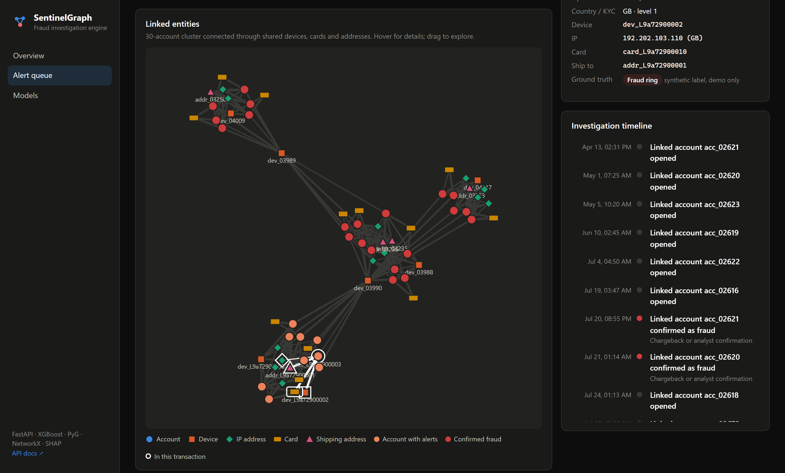
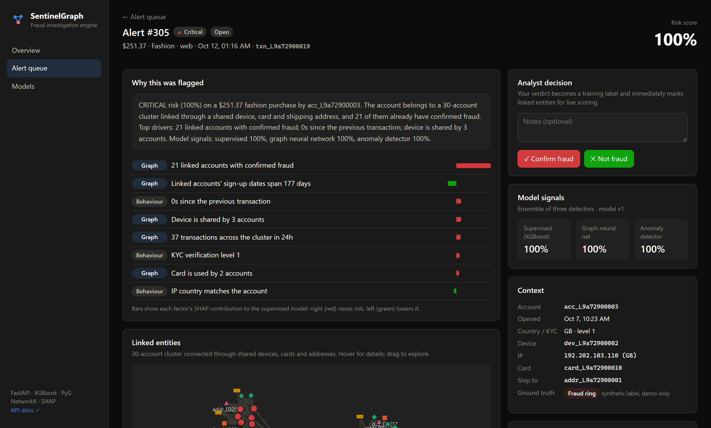
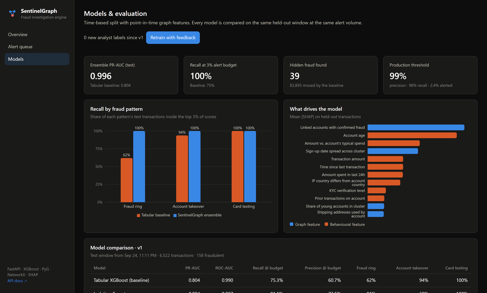

Most fraud models score each transaction on its own: amount, time, location, velocity. Organised fraud doesn't look suspicious one transaction at a time. A fraud ring of "aged" accounts making ordinary-sized purchases passes every individual check. What gives it away is the network: the same devices, stolen cards and drop-shipping addresses reused across many accounts.
The solution
SentinelGraph builds a live graph of accounts and the entities they use, and combines three detectors:
XGBoost on 40 behavioural and graph features, such as how many accounts share a device, how big an account's linked cluster is, and how many linked accounts already have confirmed fraud.
A GraphSAGE graph neural network (PyTorch Geometric) that learns risk from each account's neighbourhood.
Isolation Forest anomaly detection for patterns no one has labelled yet.
Every alert comes with SHAP-based reasons, a written case narrative, model-by-model signals, an interactive linked-entity graph and a chronological investigation timeline. When an analyst confirms or dismisses an alert, the decision immediately updates live scoring for every linked account and is used to train the next model version.

Linked-entity graph: a newly detected fraud ring (orange) connected to three previously confirmed rings (red) through recycled devices.

Explainable alert: SHAP contributing factors, a plain-English case narrative, analyst decision and model signals.
Engineering highlights
Leakage-free evaluation. Graph features are computed point in time, so each transaction only sees links that existed when it happened. Fraud labels arrive with a realistic 10-day chargeback delay, and the split is by time, not random.
One feature pipeline for training and serving, so there's no training/serving skew.
Fair benchmark. Every model is compared at the same alert budget (3% of traffic, roughly what an analyst team can review).
Production-style API (FastAPI + PostgreSQL) with real-time scoring, alert management, feedback, async retraining and model versioning.
React + TypeScript dashboard with live updates, attack simulation, colour-blind-safe charts and light/dark themes.
Dockerised (docker compose up), with automated tests and CI.
Results
Held-out test window (6,522 transactions, 158 fraudulent), all models compared at the same alert volume:
Model
PR-AUC
Recall @ 3%
Fraud ring
Account takeover
Card testing
Standard XGBoost (per-transaction features)
0.804
75.3%
62%
94%
100%
Isolation Forest (unsupervised)
0.904
91.1%
91%
69%
100%
GraphSAGE GNN
0.598
59.5%
91%
6%
5%
XGBoost + graph features
0.996
99.4%
99%
100%
100%
SentinelGraph ensemble
0.996
100%
100%
100%
100%
39 fraudulent transactions ($3.9k) caught that the standard model missed, 38 of them from fraud rings.
99% precision and 98% recall at the production alert threshold.
Each detector covers different fraud: the GNN excels at rings but is blind to account takeover, and the anomaly detector catches card testing. The ensemble combines their strengths.

Model evaluation: recall by fraud pattern versus the baseline, and the features that drive decisions (mean |SHAP|).
Benchmarked on a realistic synthetic dataset (≈33k transactions, 2.7k customers) with injected fraud rings, account takeovers and card-testing attacks, plus hard negatives such as families and roommates who legitimately share devices and addresses.